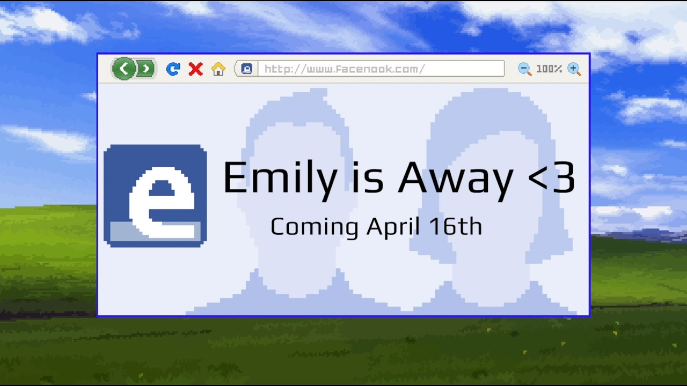

Creator
Kyle Seeley is the full creator of this game series. He is the developer and publisher of both games, with even a third game in the series that was completed in 2021.
Emily is Away <3
'Emily is Away <3' is the third game in the game's series that costs $9.99. As the third game, it has even more advanced game mechanics. There are still response choices, multiple endings, and the conclusion of your story with Emily.
